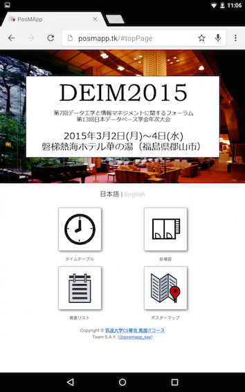
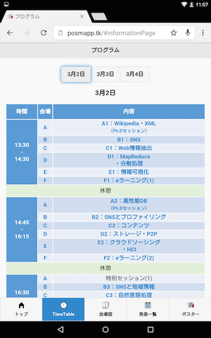
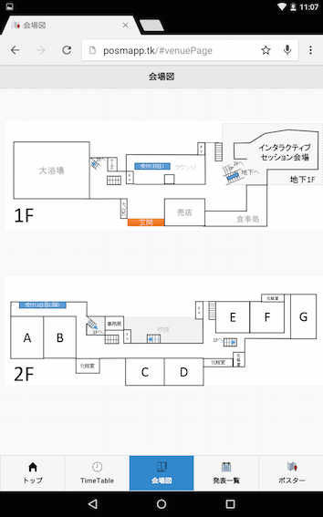
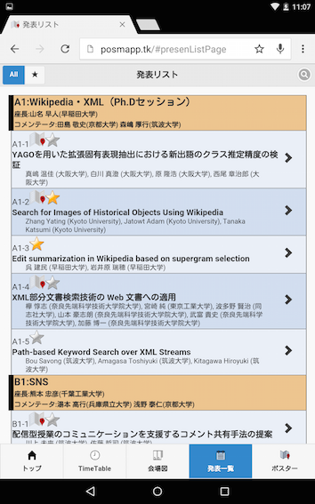
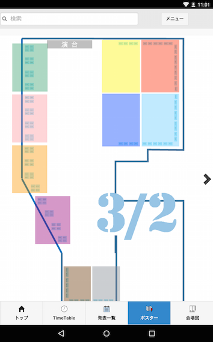

PosMAppとは
PosMAppは、ポスター展示を含むシンポジウムのための、スマートフォン用Webアプリケーションです。
短めの口頭発表の後にポスター発表を行うスケジュールのシンポジウムを主に対象とし、
タイムテーブル、発表リストからポスターマップ上での展示位置の表示、
ポスターのチラシを手に展示会を回る場合と比べ、
スマートフォンを片手に興味深い発表に目を付けて優先的にポスター訪問するなど、
実りのあるポスター展示会を過ごすことができます。
- ポスターマップ
- ポスター情報閲覧
- ポスター一覧表示
- ポスターへのブックマーク
- ブックマークリスト表示
- ポスタータイトル検索
- イベントプログラム表示（タイムテーブル）
トップページ

- 各機能のアイコンをタップすることで、各機能の画面へ遷移します
タイムテーブル

- このイベントのタイムスケジュールを表示します
- 上部の日付ボタンで日付を切り替えることができます
- 内容をタップすると、その発表リストのセッションまでジャンプします
会場マップ

- このイベントが行われる会場のマップを表示します
発表リスト

- すべての発表を一覧表示します。スクロール可能です
- 各発表の右端の"＞"ボタンまたはから、発表情報閲覧画面へ遷移可能です
- マップアイコンが付いている発表は、ポスターがあります。
- マップアイコンをタップすると、ポスターマップに遷移し、その発表のポスターの場所を示します。
- 各発表の星マークをタップすると、ブックマークに追加・削除可能です
- 左上にあるトグルボタンで、発表リストとブックマークリストを切り替えることができます
- ブックマークリストには、ブックマークした発表の一覧が表示されます
- 右上のボタンをタップすると、検索のヒントが表示されます
ポスターマップ

- 青く表示されている四角いアイコンをポスターアイコンと呼びます
- 各ポスターのブースを示しています
- タップされるとポスターアイコンが緑色になり、右下に基本情報が表示されます
- 基本情報パネルをタップすると、基本情報が非表示になります
- 基本情報パネル上の星アイコンをタップすると、そのポスターがブックマークされます
- ブックマークされたポスターには、マップ上で星マークが付きます
- ブックマークリストにも登録されます
- 基本情報パネルの右端の"＞"ボタンをタップすると、そのポスターの詳細情報を表示します
- 大きく色が付いている長方形の部分をタップエリアと呼びます
- タップすると、エリアの部分が画面いっぱいになるようにズームインされます。
- その部分のポスターアイコンを大きく見ることができます。
- ズームインすると右上に戻るボタンが表示され、それをタップするとズームアウトされます
- マップの左右端にある矢印をタップすると、日付を切り替えることが出来ます
- 日付は、マップ上のアイコンが無い場所に表示されています
- マップ上をドラッグすると、マップを移動させることができます
- ドラッグした後、マップ上をダブルタップすると、マップを元の位置に戻すことができます
ver 2.0 最終更新日 2014/01/27